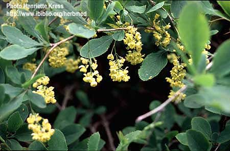
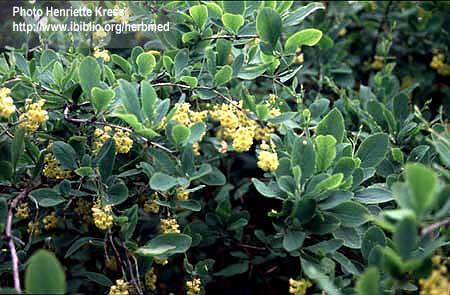
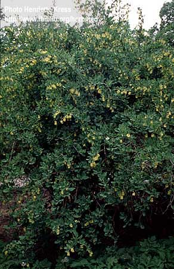

Berberis
vulgaris
Taxonomic Details

----- Correct Name
----- Classification
----- Synonyms
----- Common Names
Other Biological Details
----- Habit and Habitat
----- Diagnostic Features
----- Reproductive Biology
---------- Breeding System
---------- Phenology
---------- Pollinators
---------- Seed Biology
----------Seed
germination
----------Cultivation
----- Major Pests and Diseases
Economic Potential and Uses
----- Parts Used
-----Uses
-----Medicinal Uses
----- Harvesting Practices
----- Produce and Products
----- Chemistry
----- Processing Techniques
----- Other uses
----- Economic Potential to the Country
----- Export Potential
Miscellaneous Information
Literature
Taxonomic
Details
Correct Name
: Berberis vulgaris


Family: Berberidaceae
Synonyms :
Common Names :
English: Barberry
Hindi: Chatrea, Kashmal, Common barberry, Kashmal,
Punjabi: Zirishk, Kazhmal, Chachar or chachar
Back to Top
Other
Biological Details
HABIT & HABITAT :
These are shrubs, 8-10 ft. height, leaves 2-3
in number, quite deciduous, long petioled broad oblong- lanceolate or obovate
acutely serrate. Racemes exceeding the leaves pendulous simple not glaucous, flowers
large, berries oblong- ovoid compressed. Light deciduous woodland, hedges, roadsides,
clearings etc, preferring a sunny position and a chalky soil.
Barberry Coast. Naturalized, or possibly native, in Britain. It is alos found
in North West Himalayas, Temperate regions, Western Himalayas,
Availability :
Status :
Back to Top
DIAGNOSTIC
FEATURES
A deciduous shrub growing to 3m by 2m at a
medium rate. It is hardy to zone 3 and is not
frost tender. It is in leaf from
March to November, in flower from May to June,
and the seeds ripen from September
to October. The flowers are hermaphrodite (have both male and female organs)
and are pollinated by Insects. The plant is self-fertile. It is noted for attracting
wildlife. We rate it 3 out of 5 for usefulness.
The plant prefers light (sandy), medium (loamy) and heavy (clay) soils and can
grow in heavy clay and nutritionally poor soils. The plant prefers acid, neutral
and basic (alkaline) soils. It can grow in semi-shade (light woodland) or no
shade. It requires dry or moist soil.
Back to Top
REPRODUCTIVE BIOLOGY
:
Breeding System :
Phenology :
Flowering occurs during June.-July.
Pollinators:
Seed Biology :
Seed
Germination :
Seed - best sown as soon as it is ripe in a cold frame, when it should germinate
in late winter or early spring. Seed from over-ripe fruit will take longer
to germinate, whilst stored seed may require cold stratification and should
be sown in a cold frame as early in the year as possible. The seedlings
are subject to damping off, so should be kept well ventilated. When the
seedlings are large enough to handle, prick them out into individual pots and
grow them on in a cold frame. If growth is sufficient, it can be possible to
plant them out into their permanent positions in the autumn, but generally it
is best to leave them in the cold frame for the winter and plant them out in
late spring or early summer of the following year. Germination averages out
at about 90%.
Cultivation :
Prefers a warm moist loamy soil but it is by no means fastidious, succeeding
in thin, dry and shallow soils. Prefers a light rich rather dry soil
according to another report. Grows well in heavy clay soils. Succeeds in
full sun or light shade but requires a moist soil when grown in the
shade of trees.
Hardy to about -35°c. A very ornamental plant, the barberry was
at one time cultivated for its edible fruit, there are several named
varieties. 'Dulcis' the fruit of which is sweet or slightly sour. 'Asperma'
is a seedless form that was often used in France to make a jam. An
alternate host of 'black-stem rust' of wheat so it has been extensively grubbed
up from its habitats. Hybridizes freely with other members of
this genus, though it usually breeds fairly true to type. Can be pruned
back quite severely, it re sprouts well from the base.
Back to Top
Major Pests and Diseases:
Pests:
Diseases:
Back to Top
Economic
Potential and Uses
Parts used:
Root-Bark.
Uses:
The dried fruits (Sour currents), form a pleasant acid preserve. The unripe
ones are used for pickle.
Harvesting Practices
Produce and Products
Back to Top
Chemistry
Root-bark contains
berberine,palmatine,jatrorrhizine,columbamine,oxyacanthine,berbamine,berberrubine,yatroricine
and ixotetrandrine.
Back to Top
Processing Techniques
Back to Top
Other Uses
- In western medicine the Barbery (B. vulgaris Linn.)
is used as a bitter tonic and stomachic and is administered in the form of a tincture.
The roots, stem cortex and berries of B. vulgaries of Europe, sharply reduce experimentally
produced fever in rabbits, and that only some of the alkaloids, but not berberine,
present in the plant are responsible for this action.
Plants can be grown as a medium-size hedge in exposed positions but they cannot
tolerate extreme maritime exposure. They are very tolerant of trimming but
can also be left untrimmed if required. A good quality yellow dye is obtained
from the roots, bark and stem. As well as being used on cloth,
it is also used to stain wood. The unripe fruit is dried and used as beads.
Wood - soft, very hard, fine grained, yellow. Used for carving, toothpicks, mosaics
etc. It is also used as a fuel.
Barberries have long been used as a herbal remedy for the treatment of a variety
of complaints. All parts of the plant can be used though the yellow root bark
is the most concentrated source of active ingredients. The plant is mainly used
nowadays as a tonic to the gallbladder to improve the flow of bile and ameliorate
conditions such as gallbladder pain, gallstones and jaundice.
The bark and root bark are antiseptic, astringent,
cholagogue, hepatic, purgative, refrigerant, stomachic and tonic. The bark is harvested in the summer and can be dried for
storing.
It is especially useful in cases of jaundice, general debility and
biliousness,
but should be used with caution.
The flowers and the stem bark are antirheumatic.
The roots are astringent and antiseptic. They
have been pulverized in a little water and used to treat mouth ulcers.
A tea of the roots and stems has been used to treat stomach ulcers. The
root bark has also been used as a purgative and treatment for diarrhoea
and is diaphoretic. A tincture of the root bark has been used in the treatment
of rheumatism, sciatica etc. The root bark is a rich source of the alkaloid
berberine (about 6%).
Berberine, universally present in rhizomes of Berberis
species, has marked antibacterial effects. Since it is not appreciably absorbed
by the body, it is used orally in the treatment of various enteric infections,
especially bacterial dysentery. It should not be used with Glycyrrhiza
species (Liquorice) because this nullifies the effects of the berberine.
Berberine has also shown antitumour activity and is also effective in the
treatment of hypersensitive eyes, inflamed lids and conjunctivitis.
A tea made from the fruits is antipruritic, antiseptic,
appetizer, astringent, diuretic, expectorant and laxative. It is also
used as a febrifuge. The fruit, or freshly pressed juice, is used in the
treatment of liver and gall bladder problems, kidney stones, menstrual pains
etc.
The leaves are astringent and antiscorbutic.
A tea made from the leaves is used in the treatment of coughs.
The plant (probably the inner bark) is used by homeopaths
as a valuable remedy for kidney and liver insufficiency.
Back to Top
Economical
Potential to the country
Back to Top
Export Potential
Back to Top
Miscellaneous
Information
Other Posible Synonyms:
From various places across the web, may not be correct. See below.
B. dumentorum[H] B. jacquinii[G] B. sanguinea[G] B. vulgaris f. atropurpurea[G]
B. vulgaris var. purpurea[G]
Other Common Names:
From various places around the Web, may not be correct. See below.
Agracejo [E], Amberparis [E], Barberry, Common [S], Berbery [H], Common Barberry
[H,P], Epine Vinette [E], European Barberry [B,L], Pipperidge Bush [H], Zuurbes
[D],
Cultivars
'Dulcis' -The fruit of this form is sweet or slightly sour.
'Asperma' -A seedless form that was often used in France to make a jam.
It is quite possibly lost to cultivation.
Back to Top
Literature
Web References:
- Bean. W. Trees and Shrubs Hardy in Great Britain. Vol 1 - 4 and Supplement.
Murray 1981
- Chopra. R. N., Nayar. S. L. and Chopra. I. C. Glossary of Indian Medicinal
Plants (Including the Supplement). Council of Scientific and Industrial
- Chittendon, F RHS Dictionary of Plants plus Supplement. 1956 Oxford University
Press 1951
- Chiej. R. Encyclopaedia of Medicinal Plants. MacDonald 1984 ISBN 0-356-10541-5
- Clapham, Tootin and Warburg. Flora of the British Isles. Cambridge University
Press 1962
- Data (Latin & Common names, other references) from the BONAP's
Synonymized
- Details of Medicinal Uses, Habitats, etc. in M. Grieve A Modern Herbal
(1931)
- Details of Scandanavian and European Common names in Henriette's
names database
- Dirr. M. A. and Heuser. M. W. The Reference Manual of Woody Plant Propagation.
Athens Ga. Varsity Press 1987 ISBN 0942375009
- Duke. J. A. and Ayensu. E. S. Medicinal Plants of China Reference Publications,
Inc. 1985 ISBN 0-917256-20-4
- Ethnobotany Data (common names, uses, countries) from the Ethnobotany
Database
- Facciola. S. Cornucopia - A Source Book of Edible Plants. Kampong Publications
1990 ISBN 0-9628087-0-9
- Gamble. J. S. A Manual of Indian Timbers. Bishen Singh Mahendra Pal Singh
1972
- Gordon. A. G. and Rowe. D. C. f. Seed Manual for Ornamental Trees and Shrubs.
- Grieve. A Modern Herbal. Penguin 1984 ISBN 0-14-046-440-9
- Hedrick. U. P. Sturtevant's Edible Plants of the World. Dover Publications
1972 ISBN 0-486-20459-6
- Holtom. J. and Hylton. W. Complete Guide to Herbs. Rodale Press 1979 ISBN
0-87857-262-7
- http://www.ibiblio.org/herbmed/pictures/p03/pages/berberis-vulgaris.htm
- Images from the Vascular Plant Image Gallery of the Texas A&M
Bioinformatics Working Group.
- Illustration from the Southwest School of Botanical Medicine
- Ken Fern, Notes from observations, tasting etc at Plants For A Future and on field trips.
- Komarov. V. L. Flora of the USSR. Israel Program for Scientific Translation
1968
- Kunkel. G. Plants for Human Consumption. Koeltz Scientific Books 1984
ISBN 3874292169
- Links, Photos, Suppliers from Hortiplex Plant Database
- Launert. E. Edible and Medicinal Plants. Hamlyn 1981 ISBN 0-600-37216-2
- Lust. J. The Herb Book. Bantam books 1983 ISBN 0-553-23827-2
- Mabey. R. Food for Free. Collins 1974 ISBN 0-00-219060-5
- McMillan-Browse. P. Hardy Woody Plants from Seed. Grower Books 1985 ISBN
0-901361-21-6
- Mills. S. Y. The Dictionary of Modern Herbalism.
- Polunin. O. Flowers of Europe - A Field Guide. Oxford University Press
1969 ISBN 0192176218
- Phillips. R. & Foy. N. Herbs Pan Books Ltd. London. 1990 ISBN 0-330-30725-8
- Rosewarne experimental horticultural station. Shelter Trees and Hedges.
Ministry of Agriculture, Fisheries and Food 1984
- Simmons. A. E. Growing Unusual Fruit. David and Charles 1972 ISBN 0-7153-5531-7
- Sheat. W. G. Propagation of Trees, Shrubs and Conifers. MacMillan and Co
1948
- Saunders. C. F. Edible and Useful Wild Plants of the United States and
Canada. Dover Publications 1976 ISBN 0-486-23310-3
- Stuart. M. (Editor) The Encyclopedia of Herbs and Herbalism Orbis Publishing.
London. 1979 ISBN 0-85613-067-2
- Triska. Dr. Hamlyn Encyclopaedia of Plants. Hamlyn 1975 ISBN 0-600-33545-3
Very interesting reading, giving some details of plant uses and quite a lot
of folk-lore.
- Thompson. B. The Gardener's Assistant. Blackie and Son. 1878
- Thomas. G. S. Ornamental Shrubs, Climbers and Bamboos. Murray 1992 ISBN
0-7195-5043-2
- Uphof. J. C. Th. Dictionary of Economic Plants. Weinheim 1959
- Usher. G. A Dictionary of Plants Used by Man. Constable 1974 ISBN 0094579202
Back to Top